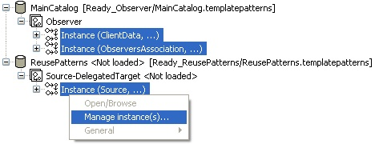

Instance representations
The instances which are present in the model are represented below the corresponding patterns.

The 'Manage instance(s)' menu item opens the Instance Management Panel on all the selected instances. Note that you can also combine catalogs, patterns and instances in the selection before clicking 'Manage instance(s)…': as expected, this will open the Instance Management Panel on all the instances concerned.